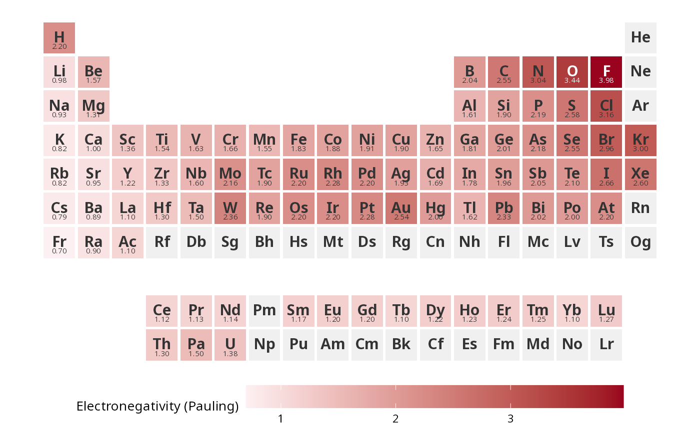
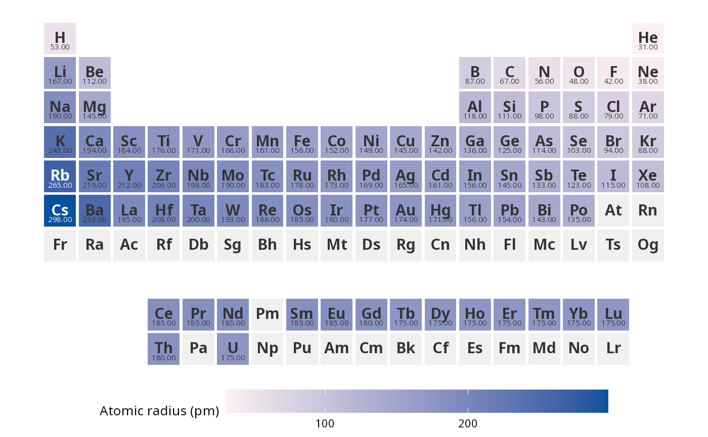
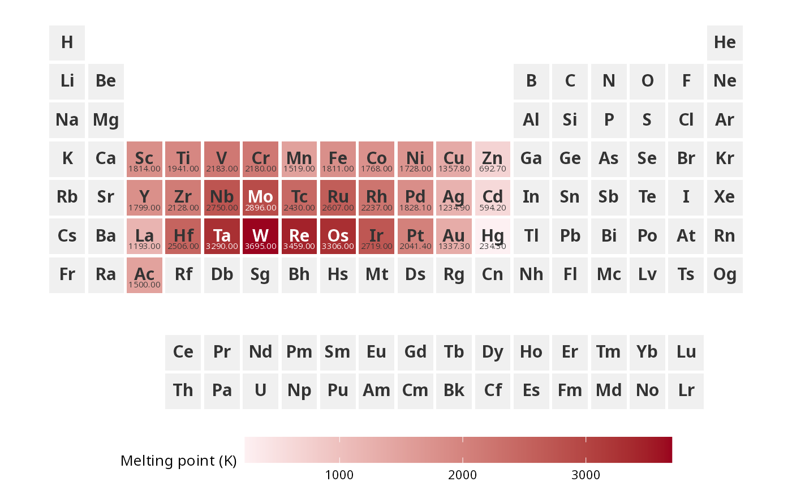

A data frame with physical and chemical properties for all 118 elements, together with their IUPAC 18-column grid positions. Use this dataset directly with [ggPSE()] to plot built-in properties without supplying external data.
Format
A data frame with 118 rows and 17 columns:
- symbol
Element symbol, e.g. "Fe"
- name
Full element name, e.g. "Iron"
- atomic_number
Atomic number (integer)
- col
Column in the IUPAC 18-column layout (1-18)
- row
Display row; lanthanides = 9, actinides = 10
- period
IUPAC period (1-7)
- group
IUPAC group (1-18); NA for lanthanides and actinides
- block
Orbital block: "s", "p", "d", or "f"
- category
Element category, e.g. "transition metal", "halogen"
- atomic_weight
Standard atomic weight (IUPAC 2021); NA where not defined
- electronegativity
Pauling electronegativity; NA for noble gases and elements without reliable values
- atomic_radius_pm
Empirical atomic radius in picometers (Slater 1964); NA where not available
- density_g_cm3
Density at standard temp in g/cm3; NA where not determined
- melting_point_K
Melting point in Kelvin; NA where not determined
- boiling_point_K
Boiling point in Kelvin; NA where not determined
- ionization_energy_eV
First ionization energy in eV (NIST)
- electron_affinity_eV
Electron affinity in eV (NIST); 0 indicates stable negative ion does not form
Source
Atomic weights: IUPAC Commission on Isotopic Abundances and Atomic Weights (2021). https://iupac.org/what-we-do/periodic-table-of-elements/
Electronegativity: Pauling, L. (1960). The Nature of the Chemical Bond. Cornell University Press.
Atomic radii: Slater, J.C. (1964). Journal of Chemical Physics, 41, 3199.
Physical properties: NIST WebBook. https://webbook.nist.gov
Examples
data(ggpse_elements)
ggPSE(ggpse_elements, value_col = "electronegativity",
legend_title = "Electronegativity (Pauling)")

# Plot atomic radius
ggPSE(ggpse_elements, value_col = "atomic_radius_pm",
color_high = "#08519c",
legend_title = "Atomic radius (pm)")

# Filter to d-block only
ggPSE(ggpse_elements[ggpse_elements$block == "d", ],
value_col = "melting_point_K",
legend_title = "Melting point (K)")

# Join your own measurements against it
if (FALSE) { # \dontrun{
my_data <- merge(ggpse_elements, my_data, by = "symbol", all.x = TRUE)
ggPSE(my_data, value_col = "my_measurement")
} # }